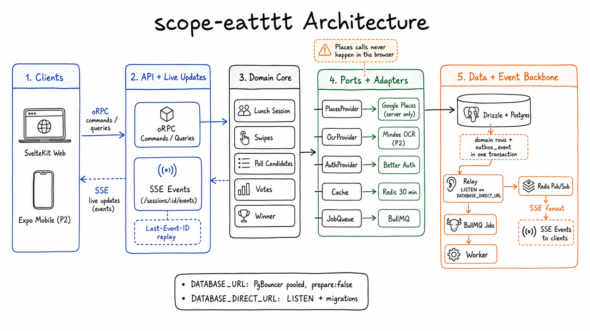

oRPC changes state
Mutations and query-style reads go through packages/contract and the SvelteKit oRPC handler.
A real-time lunch decider: create a session, share a code, swipe restaurants, promote crowd-approved picks, vote, and reveal the winner live.

Read just enough to orient, then run the narrowest path that proves the app works on your machine.
session.startSwiping.
Follow it from packages/contract/src/router.ts to apps/web/src/lib/server/orpc.ts, packages/core/src/domain/session.ts, the DB repo, outbox event, SSE reducer, and apps/web/src/routes/s/[id]/+page.svelte.
The app is intentionally split: typed commands change state, events move that state to browsers, and background jobs do slow work.
lunch_session with location, cuisines, and radius.Mutations and query-style reads go through packages/contract and the SvelteKit oRPC handler.
Do not stream over oRPC. Browsers subscribe to GET /sessions/:id/events and replay with Last-Event-ID.
Places fetching and poll closing run in apps/worker, backed by Redis and the outbox event path.
Start with fake providers. Add real vendor keys only after the fake end-to-end loop works.
pnpm install
cp .env.example .env
docker compose up -d
pnpm db:migrate
pnpm --filter worker dev
pnpm --filter web devChange the smallest layer that owns the behavior. Do not let vendor details leak into domain code.
| Area | Purpose | Start here |
|---|---|---|
apps/web |
SvelteKit screens, auth bootstrap, oRPC server handlers, SSE gateway, client stores. | src/routes/+page.svelte, src/routes/s/[id]/+page.svelte, src/lib/server/orpc.ts |
apps/worker |
BullMQ jobs for places fetches and automatic poll closing. | src/index.ts, src/jobs/placesFetch.ts, src/jobs/pollClose.ts |
packages/contract |
Shared oRPC contract, Zod schemas, app events, and type seam for web/mobile. | src/router.ts, src/events.ts, src/schemas/ |
packages/core |
Domain rules and ports. This package must stay vendor-free. | src/domain/session.ts, src/domain/swipe.ts, src/domain/poll.ts |
packages/adapters |
Drizzle repository, Redis bus/cache, BullMQ queue, Better Auth, Google Places adapter. | src/repo/drizzleRepo.ts, src/bus/redis.ts, src/places/google.ts |
packages/db |
Drizzle schema, DB clients, migrations, and the direct outbox listener. | src/schema/, src/client.ts, src/listener.ts |
packages/ui + packages/tokens |
Reusable Svelte components and Hungry Sandwich Club design tokens. | packages/ui/src/, packages/tokens/src/theme.css |
These are the constraints most likely to prevent subtle local-to-production breakage.
Domain code depends on ports, not Google, Redis, BullMQ, Drizzle, or Better Auth.
Commands write domain rows and outbox_event rows in one transaction. Do not dual-write directly to Redis from command logic.
Use oRPC for commands and reads. Use SSE for live updates and reconnect replay.
Browser code never calls Places. Search is field-masked, cached for 30 minutes, and routed through adapters/jobs.
Better Auth owns user, session, account, and verification. App tables FK to user.id.
Phase 2 receipt OCR can suggest bill data, but it must never auto-finalize a bill.
Pick the narrowest check for your change, then run a wider check before claiming the work is done.
pnpm check-types
pnpm test
pnpm buildpnpm --filter @scope/core test
pnpm --filter web test -- tests/session-flow.spec.ts
pnpm --filter @scope/ui testMatch DESIGN.md: cream canvas, thick black borders, flat offset shadows, bright retro accents, and real app screens instead of marketing pages.